Bonus Tutorial: Diving Deeper into Decoding & Encoding#
Week 1, Day 5: Deep Learning
By Neuromatch Academy
Content creators: Jorge A. Menendez, Carsen Stringer
Content reviewers: Roozbeh Farhoodi, Madineh Sarvestani, Kshitij Dwivedi, Spiros Chavlis, Ella Batty, Michael Waskom
Production editor: Spiros Chavlis
Tutorial Objectives#
In this tutorial, we will dive deeper into our decoding model from Tutorial 1 and we will fit a convolutional neural network directly to neural activities.
Setup#
Install and import feedback gadget#
Show code cell source
# @title Install and import feedback gadget
!pip3 install vibecheck datatops --quiet
from vibecheck import DatatopsContentReviewContainer
def content_review(notebook_section: str):
return DatatopsContentReviewContainer(
"", # No text prompt
notebook_section,
{
"url": "https://pmyvdlilci.execute-api.us-east-1.amazonaws.com/klab",
"name": "neuromatch_cn",
"user_key": "y1x3mpx5",
},
).render()
feedback_prefix = "W1D5_T4_Bonus"
# Imports
import os
import numpy as np
import torch
from torch import nn
from torch import optim
import matplotlib as mpl
from matplotlib import pyplot as plt
Figure Settings#
Show code cell source
# @title Figure Settings
import logging
logging.getLogger('matplotlib.font_manager').disabled = True
%config InlineBackend.figure_format = 'retina'
plt.style.use("https://raw.githubusercontent.com/NeuromatchAcademy/course-content/main/nma.mplstyle")
Plotting Functions#
Show code cell source
# @title Plotting Functions
def plot_data_matrix(X, ax):
"""Visualize data matrix of neural responses using a heatmap
Args:
X (torch.Tensor or np.ndarray): matrix of neural responses to visualize
with a heatmap
ax (matplotlib axes): where to plot
"""
cax = ax.imshow(X, cmap=mpl.cm.pink, vmin=np.percentile(X, 1), vmax=np.percentile(X, 99))
cbar = plt.colorbar(cax, ax=ax, label='normalized neural response')
ax.set_aspect('auto')
ax.set_xticks([])
ax.set_yticks([])
def plot_decoded_results(train_loss, test_loss, test_labels,
predicted_test_labels, n_classes):
""" Plot decoding results in the form of network training loss and test predictions
Args:
train_loss (list): training error over iterations
test_labels (torch.Tensor): n_test x 1 tensor with orientations of the
stimuli corresponding to each row of train_data, in radians
predicted_test_labels (torch.Tensor): n_test x 1 tensor with predicted orientations of the
stimuli from decoding neural network
n_classes: number of classes
"""
# Plot results
fig, (ax1, ax2) = plt.subplots(1, 2, figsize=(16, 6))
# Plot the training loss over iterations of GD
ax1.plot(train_loss)
# Plot the testing loss over iterations of GD
ax1.plot(test_loss)
ax1.legend(['train loss', 'test loss'])
# Plot true stimulus orientation vs. predicted class
ax2.plot(stimuli_test.squeeze(), predicted_test_labels, '.')
ax1.set_xlim([0, None])
ax1.set_ylim([0, None])
ax1.set_xlabel('iterations of gradient descent')
ax1.set_ylabel('negative log likelihood')
ax2.set_xlabel('true stimulus orientation ($^o$)')
ax2.set_ylabel('decoded orientation bin')
ax2.set_xticks(np.linspace(0, 360, n_classes + 1))
ax2.set_yticks(np.arange(n_classes))
class_bins = [f'{i * 360 / n_classes: .0f}$^o$ - {(i + 1) * 360 / n_classes: .0f}$^o$' for i in range(n_classes)]
ax2.set_yticklabels(class_bins);
# Draw bin edges as vertical lines
ax2.set_ylim(ax2.get_ylim()) # fix y-axis limits
for i in range(n_classes):
lower = i * 360 / n_classes
upper = (i + 1) * 360 / n_classes
ax2.plot([lower, lower], ax2.get_ylim(), '-', color="0.7",
linewidth=1, zorder=-1)
ax2.plot([upper, upper], ax2.get_ylim(), '-', color="0.7",
linewidth=1, zorder=-1)
plt.tight_layout()
def visualize_weights(W_in_sorted, W_out):
plt.figure(figsize=(10, 4))
plt.subplot(1, 2, 1)
plt.imshow(W_in_sorted, aspect='auto', cmap='bwr', vmin=-1e-2, vmax=1e-2)
plt.colorbar()
plt.xlabel('sorted neurons')
plt.ylabel('hidden units')
plt.title('$W_{in}$')
plt.subplot(1, 2, 2)
plt.imshow(W_out.T, cmap='bwr', vmin=-3, vmax=3)
plt.xticks([])
plt.xlabel('output')
plt.ylabel('hidden units')
plt.colorbar()
plt.title('$W_{out}$')
plt.show()
def visualize_hidden_units(W_in_sorted, h):
plt.figure(figsize=(10, 8))
plt.subplot(2, 2, 1)
plt.imshow(W_in_sorted, aspect='auto', cmap='bwr', vmin=-1e-2, vmax=1e-2)
plt.xlabel('sorted neurons')
plt.ylabel('hidden units')
plt.colorbar()
plt.title('$W_{in}$')
plt.subplot(2, 2, 2)
plt.imshow(h, aspect='auto')
plt.xlabel('stimulus orientation ($^\circ$)')
plt.ylabel('hidden units')
plt.colorbar()
plt.title('$\mathbf{h}$')
plt.subplot(2, 2, 4)
plt.plot(h.T)
plt.xlabel('stimulus orientation ($^\circ$)')
plt.ylabel('hidden unit activity')
plt.title('$\mathbf{h}$ tuning curves')
plt.show()
def plot_weights(weights, channels=[0], colorbar=True):
""" plot convolutional channel weights
Args:
weights: weights of convolutional filters (conv_channels x K x K)
channels: which conv channels to plot
"""
wmax = torch.abs(weights).max()
fig, axs = plt.subplots(1, len(channels), figsize=(12, 2.5))
for i, channel in enumerate(channels):
im = axs[i].imshow(weights[channel,0], vmin=-wmax, vmax=wmax, cmap='bwr')
axs[i].set_title('channel %d'%channel)
if colorbar:
ax = fig.add_axes([1, 0.1, 0.05, 0.8])
plt.colorbar(im, ax=ax)
ax.axis('off')
plt.show()
def plot_tuning(ax, stimuli, respi_train, respi_test, neuron_index, linewidth=2):
"""Plot the tuning curve of a neuron"""
ax.plot(stimuli, respi_train, 'y', linewidth=linewidth) # plot its responses as a function of stimulus orientation
ax.plot(stimuli, respi_test, 'm', linewidth=linewidth) # plot its responses as a function of stimulus orientation
ax.set_title('neuron %i' % neuron_index)
ax.set_xlabel('stimulus orientation ($^o$)')
ax.set_ylabel('neural response')
ax.set_xticks(np.linspace(0, 360, 5))
ax.set_ylim([-0.5, 2.4])
def plot_prediction(ax, y_pred, y_train, y_test, show=False):
""" plot prediction of neural response + test neural response """
ax.plot(y_train, 'y', linewidth=1)
ax.plot(y_test,color='m')
ax.plot(y_pred, 'g', linewidth=3)
ax.set_xlabel('stimulus bin')
ax.set_ylabel('response')
if show:
plt.show()
def plot_training_curves(train_loss, test_loss):
"""
Args:
train_loss (list): training error over iterations
test_loss (list): n_test x 1 tensor with orientations of the
stimuli corresponding to each row of train_data, in radians
predicted_test_labels (torch.Tensor): n_test x 1 tensor with predicted orientations of the
stimuli from decoding neural network
"""
f, ax = plt.subplots()
# Plot the training loss over iterations of GD
ax.plot(train_loss)
# Plot the testing loss over iterations of GD
ax.plot(test_loss, '.', markersize=10)
ax.legend(['train loss', 'test loss'])
ax.set(xlabel="Gradient descent iteration", ylabel="Mean squared error")
plt.show()
def identityLine():
"""
Plot the identity line y=x
"""
ax = plt.gca()
lims = np.array([ax.get_xlim(), ax.get_ylim()])
minval = lims[:, 0].min()
maxval = lims[:, 1].max()
equal_lims = [minval, maxval]
ax.set_xlim(equal_lims)
ax.set_ylim(equal_lims)
line = ax.plot([minval, maxval], [minval, maxval], color="0.7")
line[0].set_zorder(-1)
Helper Functions#
Show code cell source
# @title Helper Functions
def load_data(data_name, bin_width=1):
"""Load mouse V1 data from Stringer et al. (2019)
Data from study reported in this preprint:
https://www.biorxiv.org/content/10.1101/679324v2.abstract
These data comprise time-averaged responses of ~20,000 neurons
to ~4,000 stimulus gratings of different orientations, recorded
through Calcium imaging. The responses have been normalized by
spontaneous levels of activity and then z-scored over stimuli, so
expect negative numbers. They have also been binned and averaged
to each degree of orientation.
This function returns the relevant data (neural responses and
stimulus orientations) in a torch.Tensor of data type torch.float32
in order to match the default data type for nn.Parameters in
Google Colab.
This function will actually average responses to stimuli with orientations
falling within bins specified by the bin_width argument. This helps
produce individual neural "responses" with smoother and more
interpretable tuning curves.
Args:
bin_width (float): size of stimulus bins over which to average neural
responses
Returns:
resp (torch.Tensor): n_stimuli x n_neurons matrix of neural responses,
each row contains the responses of each neuron to a given stimulus.
As mentioned above, neural "response" is actually an average over
responses to stimuli with similar angles falling within specified bins.
stimuli: (torch.Tensor): n_stimuli x 1 column vector with orientation
of each stimulus, in degrees. This is actually the mean orientation
of all stimuli in each bin.
"""
with np.load(data_name) as dobj:
data = dict(**dobj)
resp = data['resp']
stimuli = data['stimuli']
if bin_width > 1:
# Bin neural responses and stimuli
bins = np.digitize(stimuli, np.arange(0, 360 + bin_width, bin_width))
stimuli_binned = np.array([stimuli[bins == i].mean() for i in np.unique(bins)])
resp_binned = np.array([resp[bins == i, :].mean(0) for i in np.unique(bins)])
else:
resp_binned = resp
stimuli_binned = stimuli
# Return as torch.Tensor
resp_tensor = torch.tensor(resp_binned, dtype=torch.float32)
stimuli_tensor = torch.tensor(stimuli_binned, dtype=torch.float32).unsqueeze(1) # add singleton dimension to make a column vector
return resp_tensor, stimuli_tensor
def load_data_split(data_name):
"""Load mouse V1 data from Stringer et al. (2019)
Data from study reported in this preprint:
https://www.biorxiv.org/content/10.1101/679324v2.abstract
These data comprise time-averaged responses of ~20,000 neurons
to ~4,000 stimulus gratings of different orientations, recorded
through Calcium imaginge. The responses have been normalized by
spontaneous levels of activity and then z-scored over stimuli, so
expect negative numbers. The repsonses were split into train and
test and then each set were averaged in bins of 6 degrees.
This function returns the relevant data (neural responses and
stimulus orientations) in a torch.Tensor of data type torch.float32
in order to match the default data type for nn.Parameters in
Google Colab.
It will hold out some of the trials when averaging to allow us to have test
tuning curves.
Args:
data_name (str): filename to load
Returns:
resp_train (torch.Tensor): n_stimuli x n_neurons matrix of neural responses,
each row contains the responses of each neuron to a given stimulus.
As mentioned above, neural "response" is actually an average over
responses to stimuli with similar angles falling within specified bins.
resp_test (torch.Tensor): n_stimuli x n_neurons matrix of neural responses,
each row contains the responses of each neuron to a given stimulus.
As mentioned above, neural "response" is actually an average over
responses to stimuli with similar angles falling within specified bins
stimuli: (torch.Tensor): n_stimuli x 1 column vector with orientation
of each stimulus, in degrees. This is actually the mean orientation
of all stimuli in each bin.
"""
with np.load(data_name) as dobj:
data = dict(**dobj)
resp_train = data['resp_train']
resp_test = data['resp_test']
stimuli = data['stimuli']
# Return as torch.Tensor
resp_train_tensor = torch.tensor(resp_train, dtype=torch.float32)
resp_test_tensor = torch.tensor(resp_test, dtype=torch.float32)
stimuli_tensor = torch.tensor(stimuli, dtype=torch.float32)
return resp_train_tensor, resp_test_tensor, stimuli_tensor
def get_data(n_stim, train_data, train_labels):
""" Return n_stim randomly drawn stimuli/resp pairs
Args:
n_stim (scalar): number of stimuli to draw
resp (torch.Tensor):
train_data (torch.Tensor): n_train x n_neurons tensor with neural
responses to train on
train_labels (torch.Tensor): n_train x 1 tensor with orientations of the
stimuli corresponding to each row of train_data, in radians
Returns:
(torch.Tensor, torch.Tensor): n_stim x n_neurons tensor of neural responses and n_stim x 1 of orientations respectively
"""
n_stimuli = train_labels.shape[0]
istim = np.random.choice(n_stimuli, n_stim)
r = train_data[istim] # neural responses to this stimulus
ori = train_labels[istim] # true stimulus orientation
return r, ori
def stimulus_class(ori, n_classes):
"""Get stimulus class from stimulus orientation
Args:
ori (torch.Tensor): orientations of stimuli to return classes for
n_classes (int): total number of classes
Returns:
torch.Tensor: 1D tensor with the classes for each stimulus
"""
bins = np.linspace(0, 360, n_classes + 1)
return torch.tensor(np.digitize(ori.squeeze(), bins)) - 1 # minus 1 to accomodate Python indexing
def grating(angle, sf=1 / 28, res=0.1, patch=False):
"""Generate oriented grating stimulus
Args:
angle (float): orientation of grating (angle from vertical), in degrees
sf (float): controls spatial frequency of the grating
res (float): resolution of image. Smaller values will make the image
smaller in terms of pixels. res=1.0 corresponds to 640 x 480 pixels.
patch (boolean): set to True to make the grating a localized
patch on the left side of the image. If False, then the
grating occupies the full image.
Returns:
torch.Tensor: (res * 480) x (res * 640) pixel oriented grating image
"""
angle = np.deg2rad(angle) # transform to radians
wpix, hpix = 640, 480 # width and height of image in pixels for res=1.0
xx, yy = np.meshgrid(sf * np.arange(0, wpix * res) / res, sf * np.arange(0, hpix * res) / res)
if patch:
gratings = np.cos(xx * np.cos(angle + .1) + yy * np.sin(angle + .1)) # phase shift to make it better fit within patch
gratings[gratings < 0] = 0
gratings[gratings > 0] = 1
xcent = gratings.shape[1] * .75
ycent = gratings.shape[0] / 2
xxc, yyc = np.meshgrid(np.arange(0, gratings.shape[1]), np.arange(0, gratings.shape[0]))
icirc = ((xxc - xcent) ** 2 + (yyc - ycent) ** 2) ** 0.5 < wpix / 3 / 2 * res
gratings[~icirc] = 0.5
else:
gratings = np.cos(xx * np.cos(angle) + yy * np.sin(angle))
gratings[gratings < 0] = 0
gratings[gratings > 0] = 1
gratings -= 0.5
# Return torch tensor
return torch.tensor(gratings, dtype=torch.float32)
def filters(out_channels=6, K=7):
""" make example filters, some center-surround and gabors
Returns:
filters: out_channels x K x K
"""
grid = np.linspace(-K/2, K/2, K).astype(np.float32)
xx,yy = np.meshgrid(grid, grid, indexing='ij')
# create center-surround filters
sigma = 1.1
gaussian = np.exp(-(xx**2 + yy**2)**0.5/(2*sigma**2))
wide_gaussian = np.exp(-(xx**2 + yy**2)**0.5/(2*(sigma*2)**2))
center_surround = gaussian - 0.5 * wide_gaussian
# create gabor filters
thetas = np.linspace(0, 180, out_channels-2+1)[:-1] * np.pi/180
gabors = np.zeros((len(thetas), K, K), np.float32)
lam = 10
phi = np.pi/2
gaussian = np.exp(-(xx**2 + yy**2)**0.5/(2*(sigma*0.4)**2))
for i,theta in enumerate(thetas):
x = xx*np.cos(theta) + yy*np.sin(theta)
gabors[i] = gaussian * np.cos(2*np.pi*x/lam + phi)
filters = np.concatenate((center_surround[np.newaxis,:,:],
-1*center_surround[np.newaxis,:,:],
gabors),
axis=0)
filters /= np.abs(filters).max(axis=(1,2))[:,np.newaxis,np.newaxis]
filters -= filters.mean(axis=(1,2))[:,np.newaxis,np.newaxis]
# convert to torch
filters = torch.from_numpy(filters)
# add channel axis
filters = filters.unsqueeze(1)
return filters
def regularized_MSE_loss(output, target, weights=None, L2_penalty=0, L1_penalty=0):
"""loss function for MSE
Args:
output (torch.Tensor): output of network
target (torch.Tensor): neural response network is trying to predict
weights (torch.Tensor): fully-connected layer weights of network (net.out_layer.weight)
L2_penalty : scaling factor of sum of squared weights
L1_penalty : scalaing factor for sum of absolute weights
Returns:
(torch.Tensor) mean-squared error with L1 and L2 penalties added
"""
loss_fn = nn.MSELoss()
loss = loss_fn(output, target)
if weights is not None:
L2 = L2_penalty * torch.square(weights).sum()
L1 = L1_penalty * torch.abs(weights).sum()
loss += L1 + L2
return loss
Data retrieval and loading#
Show code cell source
#@title Data retrieval and loading
import hashlib
import requests
fname = "W3D4_stringer_oribinned1.npz"
url = "https://osf.io/683xc/download"
expected_md5 = "436599dfd8ebe6019f066c38aed20580"
if not os.path.isfile(fname):
try:
r = requests.get(url)
except requests.ConnectionError:
print("!!! Failed to download data !!!")
else:
if r.status_code != requests.codes.ok:
print("!!! Failed to download data !!!")
elif hashlib.md5(r.content).hexdigest() != expected_md5:
print("!!! Data download appears corrupted !!!")
else:
with open(fname, "wb") as fid:
fid.write(r.content)
Set device (GPU or CPU). Execute set_device()#
Show code cell source
# @title Set device (GPU or CPU). Execute `set_device()`
# inform the user if the notebook uses GPU or CPU.
def set_device():
"""
Set the device. CUDA if available, CPU otherwise
Args:
None
Returns:
Nothing
"""
device = "cuda" if torch.cuda.is_available() else "cpu"
if device != "cuda":
print("WARNING: For this notebook to perform best, "
"if possible, in the menu under `Runtime` -> "
"`Change runtime type.` select `GPU` ")
else:
print("GPU is enabled in this notebook.")
return device
Calling the function set_device, we can choose the GPU, if it is available. If not, the system will automatically choose the CPU. We can also manually choose the device by calling:
device = torch.device('cpu')
or
device = torch.device('cuda')
To enable the GPU in google colab, you choose ‘Runtime’ –> ‘Change runtime type’, and from the dropdown menu you select ‘GPU’ under ‘Hardware accelerator’.
# Choose the GPU, if it is available
device = set_device()
WARNING: For this notebook to perform best, if possible, in the menu under `Runtime` -> `Change runtime type.` select `GPU`
Section 1: Decoding - Investigating model and evaluating performance#
In this section, we will return to our decoding model from Tutorial 1 and further investigate its performance, and then improve it in the next section. Let’s first load the data again and train our model, as we did in Tutorial 1.
Execute this cell to load and visualize data
Show code cell source
# @markdown Execute this cell to load and visualize data
# Load data
resp_all, stimuli_all = load_data(fname) # argument to this function specifies bin width
n_stimuli, n_neurons = resp_all.shape
fig, (ax1, ax2) = plt.subplots(1, 2, figsize=(12, 5))
# Visualize data matrix
plot_data_matrix(resp_all[:100, :].T, ax1) # plot responses of first 100 neurons
ax1.set_xlabel('stimulus')
ax1.set_ylabel('neuron')
# Plot tuning curves of three random neurons
ineurons = np.random.choice(n_neurons, 3, replace=False) # pick three random neurons
ax2.plot(stimuli_all, resp_all[:, ineurons])
ax2.set_xlabel('stimulus orientation ($^o$)')
ax2.set_ylabel('neural response')
ax2.set_xticks(np.linspace(0, 360, 5))
fig.suptitle(f'{n_neurons} neurons in response to {n_stimuli} stimuli')
plt.tight_layout()
plt.show()
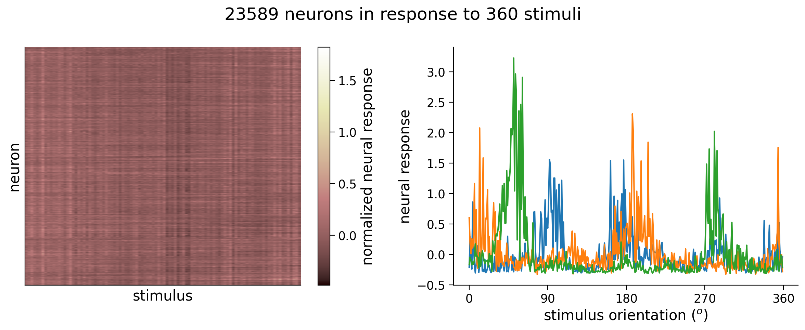
Execute this cell to split into training and test sets
Show code cell source
# @markdown Execute this cell to split into training and test sets
# Set random seeds for reproducibility
np.random.seed(4)
torch.manual_seed(4)
# Split data into training set and testing set
n_train = int(0.6 * n_stimuli) # use 60% of all data for training set
ishuffle = torch.randperm(n_stimuli)
itrain = ishuffle[:n_train] # indices of data samples to include in training set
itest = ishuffle[n_train:] # indices of data samples to include in testing set
stimuli_test = stimuli_all[itest]
resp_test = resp_all[itest]
stimuli_train = stimuli_all[itrain]
resp_train = resp_all[itrain]
Execute this cell to train the network
Show code cell source
# @markdown Execute this cell to train the network
class DeepNetReLU(nn.Module):
""" network with a single hidden layer h with a RELU """
def __init__(self, n_inputs, n_hidden):
super().__init__() # needed to invoke the properties of the parent class nn.Module
self.in_layer = nn.Linear(n_inputs, n_hidden) # neural activity --> hidden units
self.out_layer = nn.Linear(n_hidden, 1) # hidden units --> output
def forward(self, r):
h = torch.relu(self.in_layer(r)) # h is size (n_inputs, n_hidden)
y = self.out_layer(h) # y is size (n_inputs, 1)
return y
def train(net, loss_fn, train_data, train_labels,
n_epochs=50, learning_rate=1e-4):
"""Run gradient descent to opimize parameters of a given network
Args:
net (nn.Module): PyTorch network whose parameters to optimize
loss_fn: built-in PyTorch loss function to minimize
train_data (torch.Tensor): n_train x n_neurons tensor with neural
responses to train on
train_labels (torch.Tensor): n_train x 1 tensor with orientations of the
stimuli corresponding to each row of train_data
n_epochs (int, optional): number of epochs of gradient descent to run
learning_rate (float, optional): learning rate to use for gradient descent
Returns:
(list): training loss over iterations
"""
# Initialize PyTorch SGD optimizer
optimizer = optim.SGD(net.parameters(), lr=learning_rate)
# Placeholder to save the loss at each iteration
train_loss = []
# Loop over epochs
for i in range(n_epochs):
# compute network output from inputs in train_data
out = net(train_data) # compute network output from inputs in train_data
# evaluate loss function
loss = loss_fn(out, train_labels)
# Clear previous gradients
optimizer.zero_grad()
# Compute gradients
loss.backward()
# Update weights
optimizer.step()
# Store current value of loss
train_loss.append(loss.item()) # .item() needed to transform the tensor output of loss_fn to a scalar
# Track progress
if (i + 1) % (n_epochs // 5) == 0:
print(f'iteration {i + 1}/{n_epochs} | loss: {loss.item():.3f}')
return train_loss
# Set random seeds for reproducibility
np.random.seed(1)
torch.manual_seed(1)
# Initialize network with 10 hidden units
net = DeepNetReLU(n_neurons, 10).to(device)
# Initialize built-in PyTorch MSE loss function
loss_fn = nn.MSELoss().to(device)
# Run gradient descent on data
train_loss = train(net, loss_fn, resp_train.to(device), stimuli_train.to(device))
# Plot the training loss over iterations of GD
plt.plot(train_loss)
plt.xlim([0, None])
plt.ylim([0, None])
plt.xlabel('iterations of gradient descent')
plt.ylabel('mean squared error')
plt.show()
iteration 10/50 | loss: 12219.759
iteration 20/50 | loss: 1672.731
iteration 30/50 | loss: 548.097
iteration 40/50 | loss: 235.619
iteration 50/50 | loss: 144.002
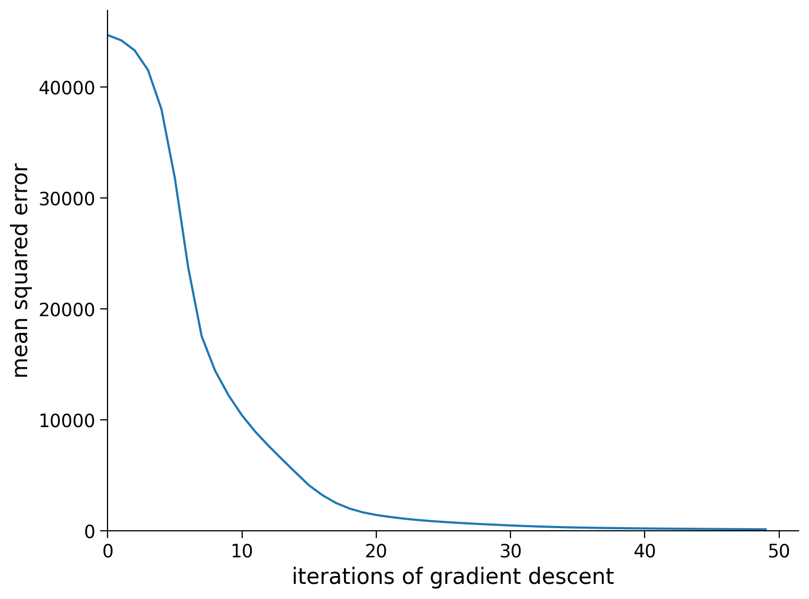
Section 1.1: Peering inside the decoding model#
We have built a model to perform decoding that takes as input neural activity and outputs the estimated angle of the stimulus. We can imagine that an animal that needs to determine angles would have a brain area that acts like the hidden layer in our model. It transforms the neural activity from the visual cortex and outputs a decision. Decisions about orientations of edges could include figuring out how to jump onto a branch, how to avoid obstacles, or determining the type of an object, e.g., food or predator.
What sort of connectivity would this brain area have with the visual cortex? Determining this experimentally would be very difficult, perhaps we can look at the model we have and see if its structure constrains the type of connectivity we’d expect.
Below we will visualize the weights from the neurons in visual cortex to the hidden units \(\mathbf{W}_{in}\), and the weights from the hidden units to the output orientation \(\mathbf{W}_{out}\).
PyTorch Note:
An important thing to note in the code below is the .detach() method. The PyTorch nn.Module class is special in that, behind the scenes, each of the variables inside it are linked to each other in a computational graph, for the purposes of automatic differentiation (the algorithm used in .backward() to compute gradients). As a result, if you want to do anything that is not a torch operation to the parameters or outputs of an nn.Module class, you’ll need to first “detach” it from its computational graph, and “attach” it on the CPU with the .cpu() method. This is what the .detach() and cpu() methods do. In this code below, we need to call it on the weights of the network. We also convert the variable from a PyTorch tensor to a numpy array using the .numpy() method.
W_in = net.in_layer.weight.detach().cpu().numpy() # we can run .detach(), .cpu() and .numpy() to get a numpy array
print(f'shape of W_in: {W_in.shape}')
W_out = net.out_layer.weight.detach().cpu().numpy() # we can run .detach() .cpu() and .numpy() to get a numpy array
print(f'shape of W_out: {W_out.shape}')
plt.figure(figsize=(10, 4))
plt.subplot(121)
plt.imshow(W_in, aspect='auto', cmap='bwr', vmin=-1e-2, vmax=1e-2)
plt.xlabel('neurons')
plt.ylabel('hidden units')
plt.colorbar()
plt.title('$W_{in}$')
plt.subplot(122)
plt.imshow(W_out.T, cmap='bwr', vmin=-3, vmax=3)
plt.xticks([])
plt.xlabel('output')
plt.ylabel('hidden units')
plt.colorbar()
plt.title('$W_{out}$')
plt.show()
shape of W_in: (10, 23589)
shape of W_out: (1, 10)
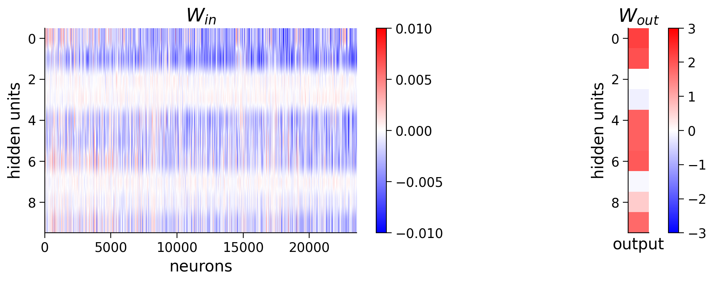
Coding Exercise 1.1: Visualizing weights#
It’s difficult to see any structure in this weight matrix. How might we visualize it in a better way?
Perhaps we can sort the neurons by their preferred orientation. We will use the resp_all matrix which is 360 stimuli (360\(^\circ\) of angles) by number of neurons. How do we find the preferred orientation?
Let’s visualize one column of this resp_all matrix first as we did at the beginning of the notebook. Can you see how we might want to first process this tuning curve before choosing the preferred orientation?
idx = 235
plt.plot(resp_all[:, idx])
plt.ylabel('neural response')
plt.xlabel('stimulus orientation ($^\circ$)')
plt.title(f'neuron {idx}')
plt.show()
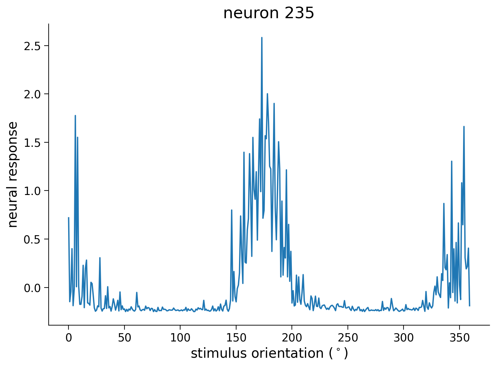
Looking at this tuning curve, there is a bit of noise across orientations, so let’s smooth with a gaussian filter and then find the position of the maximum for each neuron. After getting the maximum position aka the “preferred orientation” for each neuron, we will re-sort the \(\mathbf{W}_{in}\) matrix. The maximum position in a matrix can be computed using the .argmax(axis=_) function in python – make sure you specify the right axis though! Next, to get the indices of a matrix sorted we will need to use the .argsort() function.
from scipy.ndimage import gaussian_filter1d
# first let's smooth the tuning curves resp_all to make sure we get
# an accurate peak that isn't just noise
# resp_all is size (n_stimuli, n_neurons)
resp_smoothed = gaussian_filter1d(resp_all, 5, axis=0)
# resp_smoothed is size (n_stimuli, n_neurons)
############################################################################
## TO DO for students
# Fill out function and remove
raise NotImplementedError("Student exercise: find preferred orientation")
############################################################################
## find position of max response for each neuron
## aka preferred orientation for each neuron
preferred_orientation = ...
# Resort W_in matrix by preferred orientation
isort = preferred_orientation.argsort()
W_in_sorted = W_in[:, isort]
# plot resorted W_in matrix
visualize_weights(W_in_sorted, W_out)
# to_remove solution
from scipy.ndimage import gaussian_filter1d
# first let's smooth the tuning curves resp_all to make sure we get
# an accurate peak that isn't just noise
# resp_all is size (n_stimuli, n_neurons)
resp_smoothed = gaussian_filter1d(resp_all, 5, axis=0)
# resp_smoothed is size (n_stimuli, n_neurons)
# find position of max response for each neuron
# aka preferred orientation for each neuron
preferred_orientation = resp_smoothed.argmax(axis=0)
# Resort W_in matrix by preferred orientation
isort = preferred_orientation.argsort()
W_in_sorted = W_in[:, isort]
# plot resorted W_in matrix
with plt.xkcd():
visualize_weights(W_in_sorted, W_out)
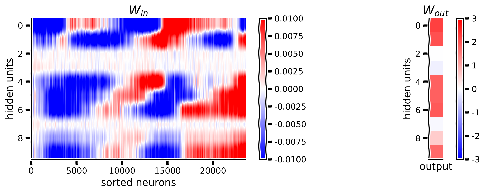
Submit your feedback#
Show code cell source
# @title Submit your feedback
content_review(f"{feedback_prefix}_Visualizing_weights_Exercise")
We can plot the activity of hidden units across various stimuli to better understand the hidden units. Recall the formula for the hidden units
We can compute the activity \(\mathbf{h}^{(n)}\) directly using \(\mathbf{W}^{in}\) and \(\mathbf{b}^{in}\) or we can modify our network above to return h in the .forward() method. In this case, we’ll compute using the equation, but in practice the second method is recommended.
W_in = net.in_layer.weight # size (10, n_neurons)
b_in = net.in_layer.bias.unsqueeze(1) # size (10, 1)
# Compute hidden unit activity h
h = torch.relu(W_in @ resp_all.T.to(device) + b_in)
h = h.detach().cpu().numpy() # we can run .detach(), .cpu() and .numpy() to get a numpy array
# Visualize
visualize_hidden_units(W_in_sorted, h)
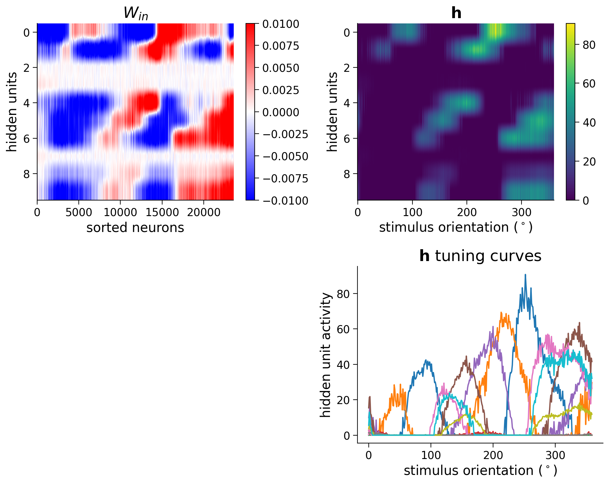
Think! 1.1: Interpreting weights#
We have just visualized how the model transforms neural activity to hidden layer activity. How should we interpret these matrices? Here are some guiding questions to explore:
Why are some of the \(\mathbf{W}_{in}\) weights close to zero for some of the hidden units? Do these correspond to close to zero weights in \(\mathbf{W}_{out}\)?
Note how each hidden unit seems to have the strongest weights to two groups of neurons in \(\mathbf{W}_{in}\), corresponding to two different sets of preferred orientations. Why do you think that is? What might this tell us about the structure of the tuning curves of the neurons?
It appears that there is at least one hidden unit active at each orientation, which is necessary to decode across all orientations. What would happen if some orientations did not activate any hidden units?
# to_remove explanation
"""
1. It seems like the model did not learn any weights for those hidden units.
Perhaps the random initialization of the W_out weights for those hidden units
was close to zero and that meant the gradients were small and they remained
unchanged during training. You could test this hypothesis by trying a
different random seed when initializing the network.
2. Neurons often have tuning preference to two gratings at 180 degrees apart
since these two gratings are the same other than the phase. This is likely why
there are two peaks.
3. Any stimulus orientations that don't activate any hidden units would create
an output vector of zero, and therefore those orientations would not be
distinguishable from each other.
""";
Submit your feedback#
Show code cell source
# @title Submit your feedback
content_review(f"{feedback_prefix}_Interpreting_weights_Discussion")
Section 1.2: Generalization performance with test data#
Note that gradient descent is essentially an algorithm for fitting the network’s parameters to a given set of training data. Selecting this training data is thus crucial for ensuring that the optimized parameters generalize to unseen data they weren’t trained on. In our case, for example, we want to make sure that our trained network is good at decoding stimulus orientations from neural responses to any orientation, not just those in our data set.
To ensure this, we have split up the full data set into a training set and a testing set. In Coding Exercise 3.2, we trained a deep network by optimizing the parameters on a training set. We will now evaluate how good the optimized parameters are by using the trained network to decode stimulus orientations from neural responses in the testing set. Good decoding performance on this testing set should then be indicative of good decoding performance on the neurons’ responses to any other stimulus orientation. This procedure is commonly used in machine learning (not just in deep learning)and is typically referred to as cross-validation.
We will compute the MSE on the test data and plot the decoded stimulus orientations as a function of the true stimulus.
Execute this cell to evaluate and plot test error
Show code cell source
# @markdown Execute this cell to evaluate and plot test error
out = net(resp_test.to(device)) # decode stimulus orientation for neural responses in testing set
ori = stimuli_test # true stimulus orientations
test_loss = loss_fn(out.to(device), ori.to(device)) # MSE on testing set (Hint: use loss_fn initialized in previous exercise)
plt.plot(ori, out.detach().cpu(), '.') # N.B. need to use .detach() to pass network output into plt.plot()
identityLine() # draw the identity line y=x; deviations from this indicate bad decoding!
plt.title(f'MSE on testing set: {test_loss.item():.2f}') # N.B. need to use .item() to turn test_loss into a scalar
plt.xlabel('true stimulus orientation ($^o$)')
plt.ylabel('decoded stimulus orientation ($^o$)')
axticks = np.linspace(0, 360, 5)
plt.xticks(axticks)
plt.yticks(axticks)
plt.show()
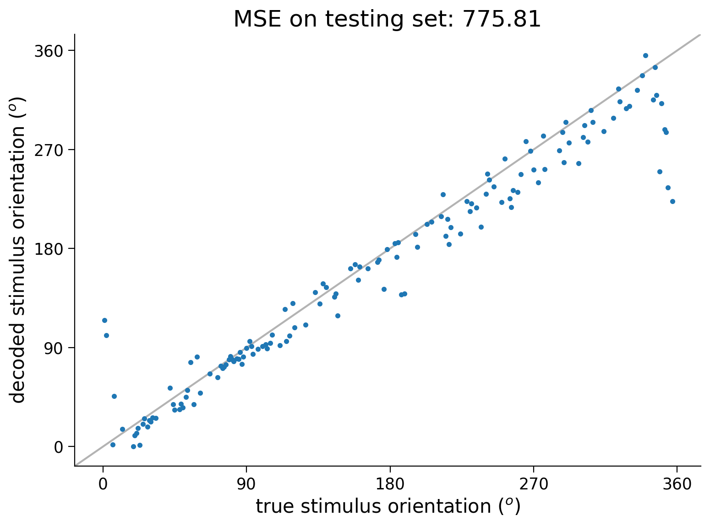
If interested, please see the next section to think more about model criticism, improve the loss function accordingly, and add regularization.
Section 2: Decoding - Evaluating & improving models#
Section 2.1: Model criticism#
Let’s now take a step back and think about how our model is succeeding/failing and how to improve it.
Execute this cell to plot decoding error
Show code cell source
# @markdown Execute this cell to plot decoding error
out = net(resp_test.to(device)).to(device) # decode stimulus orientation for neural responses in testing set
ori = stimuli_test.to(device) # true stimulus orientations
error = out - ori # decoding error
plt.plot(ori.detach().cpu(), error.detach().cpu(), '.') # plot decoding error as a function of true orientation (make sure all arguments to plt.plot() have been detached from PyTorch network!)
# Plotting
plt.xlabel('true stimulus orientation ($^o$)')
plt.ylabel('decoding error ($^o$)')
plt.xticks(np.linspace(0, 360, 5))
plt.yticks(np.linspace(-360, 360, 9))
plt.show()
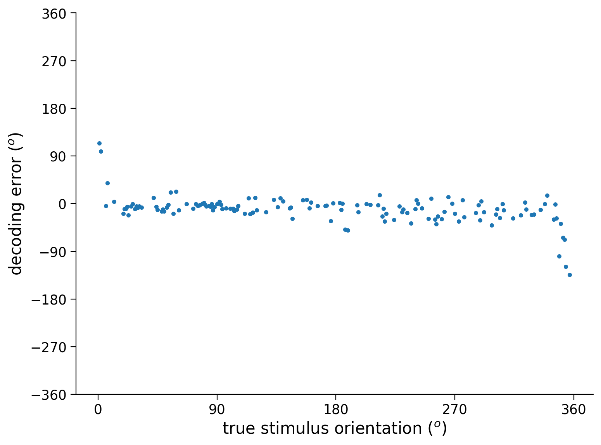
Think! 2.1: Delving into error problems#
In the cell below, we will plot the decoding error for each neural response in the testing set. The decoding error is defined as the decoded stimulus orientation minus true stimulus orientation
In particular, we plot decoding error as a function of the true stimulus orientation.
Are some stimulus orientations harder to decode than others?
If so, in what sense? Are the decoded orientations for these stimuli more variable and/or are they biased?
Can you explain this variability/bias? What makes these stimulus orientations different from the others?
(Will be addressed in next exercise) Can you think of a way to modify the deep network in order to avoid this?
# to_remove explanation
"""
It appears that the errors are larger at 0 and 360 degrees. The errors are biased
in the positive direction at 0 degrees and in the negative direction at 360 degrees.
This is because the 0 degree stimulus and the 360 degree stimulus are in fact the
same because orientation is a circular variable. The network therefore has trouble
determining whether the stimulus is 0 or 360 degrees.
We can modify the deep network to avoid this problem in a few different ways.
One approach would be to predict a sine and a cosine of the angle and then taking
the predicted angle as the angle of the complex number $sin(\theta) + i cos(\theta)$.
An alternative approach is to bin the stimulus responses and predict the bin of the stimulus.
This turns the problem into a classification problem rather than a regression problem,
and in this case you will need to use a new loss function (see below).
""";
Submit your feedback#
Show code cell source
# @title Submit your feedback
content_review(f"{feedback_prefix}_Delving_into_error_problems_Discussion")
Section 2.2: Improving the loss function#
As illustrated in the previous exercise, the squared error is not a good loss function for circular quantities like angles, since two angles that are very close (e.g. \(1^o\) and \(359^o\)) might actually have a very large squared error.
Here, we’ll avoid this problem by changing our loss function to treat our decoding problem as a classification problem. Rather than estimating the exact angle of the stimulus, we’ll now aim to construct a decoder that classifies the stimulus into one of \(C\) classes, corresponding to different bins of angles of width \(b = \frac{360}{C}\). The true class \(\tilde{y}^{(n)}\) of stimulus \(i\) is now given by
We have a helper function stimulus_class that will extract n_classes stimulus classes for us from the stimulus orientations.
To decode the stimulus class from neural responses, we’ll use a deep network that outputs a \(C\)-dimensional vector of probabilities \(\mathbf{p} = \begin{bmatrix} p_1, p_2, \ldots, p_C \end{bmatrix}^T\), corresponding to the estimated probabilities of the stimulus belonging to each class \(1, 2, \ldots, C\).
To ensure the network’s outputs are indeed probabilities (i.e. they are positive numbers between 0 and 1, and sum to 1), we’ll use a softmax function to transform the real-valued outputs from the hidden layer into probabilities. Letting \(\sigma(\cdot)\) denote this softmax function, the equations describing our network are
The decoded stimulus class is then given by that assigned the highest probability by the network:
The softmax function can be implemented in PyTorch simply using torch.softmax().
Often log probabilities are easier to work with than actual probabilities, because probabilities tend to be very small numbers that computers have trouble representing. We’ll therefore actually use the logarithm of the softmax as the output of our network,
which can implemented in PyTorch together with the softmax via an nn.LogSoftmax layer. The nice thing about the logarithmic function is that it’s monotonic, so if one probability is larger/smaller than another, then its logarithm is also larger/smaller than the other’s. We therefore have that
See the next cell for code for constructing a deep network with one hidden layer that of ReLU’s that outputs a vector of log probabilities.
# Deep network for classification
class DeepNetSoftmax(nn.Module):
"""Deep Network with one hidden layer, for classification
Args:
n_inputs (int): number of input units
n_hidden (int): number of units in hidden layer
n_classes (int): number of outputs, i.e. number of classes to output
probabilities for
Attributes:
in_layer (nn.Linear): weights and biases of input layer
out_layer (nn.Linear): weights and biases of output layer
"""
def __init__(self, n_inputs, n_hidden, n_classes):
super().__init__() # needed to invoke the properties of the parent class nn.Module
self.in_layer = nn.Linear(n_inputs, n_hidden) # neural activity --> hidden units
self.out_layer = nn.Linear(n_hidden, n_classes) # hidden units --> outputs
self.logprob = nn.LogSoftmax(dim=1) # probabilities across columns should sum to 1 (each output row corresponds to a different input)
def forward(self, r):
"""Predict stimulus orientation bin from neural responses
Args:
r (torch.Tensor): n_stimuli x n_inputs tensor with neural responses to n_stimuli
Returns:
torch.Tensor: n_stimuli x n_classes tensor with predicted class probabilities
"""
h = torch.relu(self.in_layer(r))
logp = self.logprob(self.out_layer(h))
return logp
What should our loss function now be? Ideally, we want the probabilities outputted by our network to be such that the probability of the true stimulus class is high. One way to formalize this is to say that we want to maximize the log probability of the true stimulus class \(\tilde{y}^{(n)}\) under the class probabilities predicted by the network,
To turn this into a loss function to be minimized, we can then simply multiply it by -1: maximizing the log probability is the same as minimizing the negative log probability. Summing over a batch of \(P\) inputs, our loss function is then given by
In the deep learning community, this loss function is typically referred to as the cross-entropy, or negative log likelihood. The corresponding built-in loss function in PyTorch is nn.NLLLoss() (documentation here).
Coding Exercise 2.2: A new loss function#
In the next cell, we’ve provided most of the code to train and test a network to decode stimulus orientations via classification, by minimizing the negative log likelihood. Fill in the missing pieces.
Once you’ve done this, have a look at the plotted results. Does changing the loss function from mean squared error to a classification loss solve our problems? Note that errors may still occur – but are these errors as bad as the ones that our network above was making?
Run this cell to create train function that uses test_data and L1 and L2 terms for next exercise
Show code cell source
# @markdown Run this cell to create train function that uses test_data and L1 and L2 terms for next exercise
def train(net, loss_fn, train_data, train_labels,
n_iter=50, learning_rate=1e-4,
test_data=None, test_labels=None,
L2_penalty=0, L1_penalty=0):
"""Run gradient descent to opimize parameters of a given network
Args:
net (nn.Module): PyTorch network whose parameters to optimize
loss_fn: built-in PyTorch loss function to minimize
train_data (torch.Tensor): n_train x n_neurons tensor with neural
responses to train on
train_labels (torch.Tensor): n_train x 1 tensor with orientations of the
stimuli corresponding to each row of train_data
n_iter (int, optional): number of iterations of gradient descent to run
learning_rate (float, optional): learning rate to use for gradient descent
test_data (torch.Tensor, optional): n_test x n_neurons tensor with neural
responses to test on
test_labels (torch.Tensor, optional): n_test x 1 tensor with orientations of
the stimuli corresponding to each row of test_data
L2_penalty (float, optional): l2 penalty regularizer coefficient
L1_penalty (float, optional): l1 penalty regularizer coefficient
Returns:
(list): training loss over iterations
"""
# Initialize PyTorch SGD optimizer
optimizer = optim.SGD(net.parameters(), lr=learning_rate)
# Placeholder to save the loss at each iteration
train_loss = []
test_loss = []
# Loop over epochs
for i in range(n_iter):
# compute network output from inputs in train_data
out = net(train_data) # compute network output from inputs in train_data
# evaluate loss function
if L2_penalty==0 and L1_penalty==0:
# normal loss function
loss = loss_fn(out, train_labels)
else:
# custom loss function from bonus exercise 3.3
loss = loss_fn(out, train_labels, net.in_layer.weight,
L2_penalty, L1_penalty)
# Clear previous gradients
optimizer.zero_grad()
# Compute gradients
loss.backward()
# Update weights
optimizer.step()
# Store current value of loss
train_loss.append(loss.item()) # .item() needed to transform the tensor output of loss_fn to a scalar
# Get loss for test_data, if given (we will use this in the bonus exercise 3.2 and 3.3)
if test_data is not None:
out_test = net(test_data)
# evaluate loss function
if L2_penalty==0 and L1_penalty==0:
# normal loss function
loss_test = loss_fn(out_test, test_labels)
else:
# (BONUS code) custom loss function from Bonus exercise 3.3
loss_test = loss_fn(out_test, test_labels, net.in_layer.weight,
L2_penalty, L1_penalty)
test_loss.append(loss_test.item()) # .item() needed to transform the tensor output of loss_fn to a scalar
# Track progress
if (i + 1) % (n_iter // 5) == 0:
if test_data is None:
print(f'iteration {i + 1}/{n_iter} | loss: {loss.item():.3f}')
else:
print(f'iteration {i + 1}/{n_iter} | loss: {loss.item():.3f} | test_loss: {loss_test.item():.3f}')
if test_data is None:
return train_loss
else:
return train_loss, test_loss
def decode_orientation(net, n_classes, loss_fn,
train_data, train_labels, test_data, test_labels,
n_iter=1000, L2_penalty=0, L1_penalty=0, device='cpu'):
""" Initialize, train, and test deep network to decode binned orientation from neural responses
Args:
net (nn.Module): deep network to run
n_classes (scalar): number of classes in which to bin orientation
loss_fn (function): loss function to run
train_data (torch.Tensor): n_train x n_neurons tensor with neural
responses to train on
train_labels (torch.Tensor): n_train x 1 tensor with orientations of the
stimuli corresponding to each row of train_data, in radians
test_data (torch.Tensor): n_test x n_neurons tensor with neural
responses to train on
test_labels (torch.Tensor): n_test x 1 tensor with orientations of the
stimuli corresponding to each row of train_data, in radians
n_iter (int, optional): number of iterations to run optimization
L2_penalty (float, optional): l2 penalty regularizer coefficient
L1_penalty (float, optional): l1 penalty regularizer coefficient
Returns:
(list, torch.Tensor): training loss over iterations, n_test x 1 tensor with predicted orientations of the
stimuli from decoding neural network
"""
# Bin stimulus orientations in training set
train_binned_labels = stimulus_class(train_labels, n_classes).to(device)
test_binned_labels = stimulus_class(test_labels, n_classes).to(device)
train_data = train_data.to(device)
test_data = test_data.to(device)
# Run GD on training set data, using learning rate of 0.1
# (add optional arguments test_data and test_binned_labels!)
train_loss, test_loss = train(net.to(device), loss_fn, train_data, train_binned_labels,
learning_rate=0.1, test_data=test_data,
test_labels=test_binned_labels, n_iter=n_iter,
L2_penalty=L2_penalty, L1_penalty=L1_penalty)
# Decode neural responses in testing set data
out = net(test_data).to(device)
out_labels = np.argmax(out.detach().cpu(), axis=1) # predicted classes
frac_correct = (out_labels == test_binned_labels.cpu()).sum() / len(test_binned_labels)
print(f'>>> fraction correct = {frac_correct:.3f}')
return train_loss, test_loss, out_labels
# Set random seeds for reproducibility
np.random.seed(1)
torch.manual_seed(1)
n_classes = 20
############################################################################
## TO DO for students
# Fill out function and remove
raise NotImplementedError("Student exercise: make network and loss")
############################################################################
# Initialize network
net = ... # use M=20 hidden units
# Initialize built-in PyTorch negative log likelihood loss function
loss_fn = ...
# Train network and run it on test images
# this function uses the train function you wrote before
train_loss, test_loss, predicted_test_labels = decode_orientation(net, n_classes, loss_fn.to(device),
resp_train, stimuli_train,
resp_test, stimuli_test,
device=device)
# Plot results
plot_decoded_results(train_loss, test_loss, stimuli_test, predicted_test_labels, n_classes)
# to_remove solution
def decode_orientation(net, n_classes, loss_fn,
train_data, train_labels, test_data, test_labels,
n_iter=1000, L2_penalty=0, L1_penalty=0, device='cpu'):
""" Initialize, train, and test deep network to decode binned orientation from neural responses
Args:
net (nn.Module): deep network to run
n_classes (scalar): number of classes in which to bin orientation
loss_fn (function): loss function to run
train_data (torch.Tensor): n_train x n_neurons tensor with neural
responses to train on
train_labels (torch.Tensor): n_train x 1 tensor with orientations of the
stimuli corresponding to each row of train_data, in radians
test_data (torch.Tensor): n_test x n_neurons tensor with neural
responses to train on
test_labels (torch.Tensor): n_test x 1 tensor with orientations of the
stimuli corresponding to each row of train_data, in radians
n_iter (int, optional): number of iterations to run optimization
L2_penalty (float, optional): l2 penalty regularizer coefficient
L1_penalty (float, optional): l1 penalty regularizer coefficient
Returns:
(list, torch.Tensor): training loss over iterations, n_test x 1 tensor with predicted orientations of the
stimuli from decoding neural network
"""
# Bin stimulus orientations in training set
train_binned_labels = stimulus_class(train_labels, n_classes).to(device)
test_binned_labels = stimulus_class(test_labels, n_classes).to(device)
train_data = train_data.to(device)
test_data = test_data.to(device)
# Run GD on training set data, using learning rate of 0.1
# (add optional arguments test_data and test_binned_labels!)
train_loss, test_loss = train(net.to(device), loss_fn, train_data, train_binned_labels,
learning_rate=0.1, test_data=test_data,
test_labels=test_binned_labels, n_iter=n_iter,
L2_penalty=L2_penalty, L1_penalty=L1_penalty)
# Decode neural responses in testing set data
out = net(test_data).to(device)
out_labels = np.argmax(out.detach().cpu(), axis=1) # predicted classes
frac_correct = (out_labels == test_binned_labels.cpu()).sum() / len(test_binned_labels)
print(f'>>> fraction correct = {frac_correct:.3f}')
return train_loss, test_loss, out_labels
# Set random seeds for reproducibility
np.random.seed(1)
torch.manual_seed(1)
n_classes = 20
# Initialize network
net = DeepNetSoftmax(n_neurons, 20, n_classes) # use M=20 hidden units
# Initialize built-in PyTorch negative log likelihood loss function
loss_fn = nn.NLLLoss()
# Train network and run it on test images
# this function uses the train function you wrote before
train_loss, test_loss, predicted_test_labels = decode_orientation(net, n_classes, loss_fn.to(device),
resp_train, stimuli_train,
resp_test, stimuli_test,
device=device)
# Plot results
with plt.xkcd():
plot_decoded_results(train_loss, test_loss, stimuli_test, predicted_test_labels, n_classes)
iteration 200/1000 | loss: 0.004 | test_loss: 0.252
iteration 400/1000 | loss: 0.002 | test_loss: 0.255
iteration 600/1000 | loss: 0.001 | test_loss: 0.259
iteration 800/1000 | loss: 0.001 | test_loss: 0.263
iteration 1000/1000 | loss: 0.001 | test_loss: 0.265
>>> fraction correct = 0.861
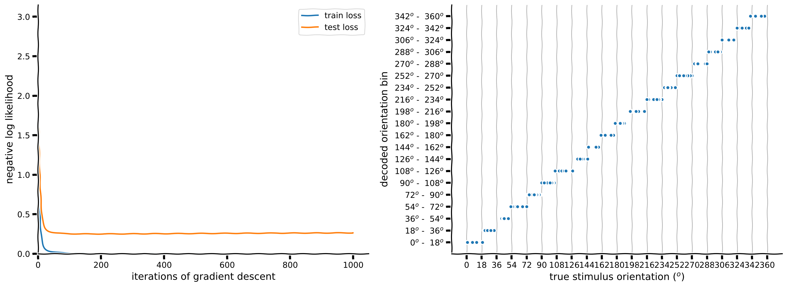
Submit your feedback#
Show code cell source
# @title Submit your feedback
content_review(f"{feedback_prefix}_A_new_loss_function_Exercise")
How do the weights \(W_{in}\) from the neurons to the hidden layer look now?
W_in = net.in_layer.weight.detach().cpu().numpy() # we can run detach, cpu and numpy to get a numpy array
print(f'shape of W_in: {W_in.shape}')
W_out = net.out_layer.weight.detach().cpu().numpy()
# plot resorted W_in matrix
visualize_weights(W_in[:, isort], W_out)
shape of W_in: (20, 23589)
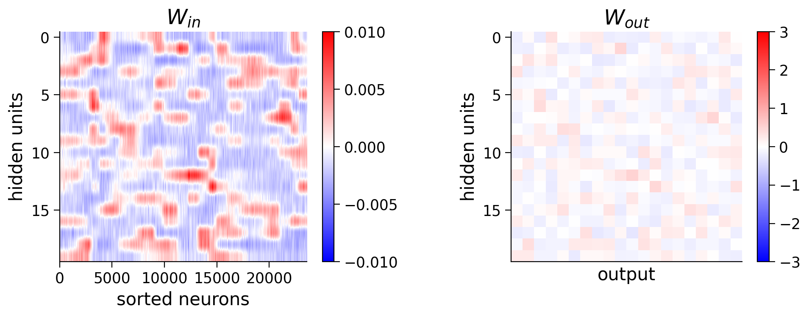
Section 2.3: Regularization#
Video 1: Regularization#
Submit your feedback#
Show code cell source
# @title Submit your feedback
content_review(f"{feedback_prefix}_Regularization_Video")
As discussed in the lecture, it is often important to incorporate regularization terms into the loss function to avoid overfitting. In particular, in this case, we will use these terms to enforce sparsity in the linear layer from neurons to hidden units.
Here we’ll consider the classic L2 regularization penalty \(\mathcal{R}_{L2}\), which is the sum of squares of each weight in the network \(\sum_{ij} {\mathbf{W}^{out}_{ij}}^2\) times a constant that we call L2_penalty.
We will also add an L1 regularization penalty \(\mathcal{R}_{L1}\) to enforce sparsity of the weights, which is the sum of the absolute values of the weights \(\sum_{ij} |{\mathbf{W}^{out}_{ij}}|\) times a constant that we call L1_penalty.
We will add both of these to the loss function:
The parameters L2_penalty and L1_penalty are inputs to the train function.
Coding Exercise 2.3: Add regularization to training#
We will create a new loss function that adds L1 and L2 regularization. In particular, you will:
add L2 loss penalty to the weights
add L1 loss penalty to the weights
We will then train the network using this loss function. Full training will take a few minutes: if you want to train for just a few steps to speed up the code while iterating on your code, you can decrease the n_iter input from 500.
Hint: since we are using torch instead of np, we will use torch.abs instead of np.absolute. You can use torch.sum or .sum() to sum over a tensor.
def regularized_loss(output, target, weights, L2_penalty=0, L1_penalty=0,
device='cpu'):
"""loss function with L2 and L1 regularization
Args:
output (torch.Tensor): output of network
target (torch.Tensor): neural response network is trying to predict
weights (torch.Tensor): linear layer weights from neurons to hidden units (net.in_layer.weight)
L2_penalty : scaling factor of sum of squared weights
L1_penalty : scaling factor for sum of absolute weights
Returns:
(torch.Tensor) mean-squared error with L1 and L2 penalties added
"""
##############################################################################
# TO DO: add L1 and L2 regularization to the loss function
raise NotImplementedError("Student exercise: complete regularized_loss")
##############################################################################
loss_fn = nn.NLLLoss()
loss = loss_fn(output, target)
L2 = L2_penalty * ...
L1 = L1_penalty * ...
loss += L1 + L2
return loss.to(device)
# Set random seeds for reproducibility
np.random.seed(1)
torch.manual_seed(1)
n_classes = 20
# Initialize network
net = DeepNetSoftmax(n_neurons, 20, n_classes) # use M=20 hidden units
# Here you can play with L2_penalty > 0, L1_penalty > 0
train_loss, test_loss, predicted_test_labels = decode_orientation(net, n_classes,
regularized_loss,
resp_train, stimuli_train,
resp_test, stimuli_test,
n_iter=1000,
L2_penalty=1e-2,
L1_penalty=5e-4,
device=device)
# Plot results
plot_decoded_results(train_loss, test_loss, stimuli_test, predicted_test_labels, n_classes)
# to_remove solution
def regularized_loss(output, target, weights, L2_penalty=0, L1_penalty=0,
device='cpu'):
"""loss function with L2 and L1 regularization
Args:
output (torch.Tensor): output of network
target (torch.Tensor): neural response network is trying to predict
weights (torch.Tensor): linear layer weights from neurons to hidden units (net.in_layer.weight)
L2_penalty : scaling factor of sum of squared weights
L1_penalty : scaling factor for sum of absolute weights
Returns:
(torch.Tensor) mean-squared error with L1 and L2 penalties added
"""
loss_fn = nn.NLLLoss()
loss = loss_fn(output, target)
L2 = L2_penalty * torch.square(weights).sum()
L1 = L1_penalty * torch.abs(weights).sum()
loss += L1 + L2
return loss.to(device)
# Set random seeds for reproducibility
np.random.seed(1)
torch.manual_seed(1)
n_classes = 20
# Initialize network
net = DeepNetSoftmax(n_neurons, 20, n_classes) # use M=20 hidden units
# Here you can play with L2_penalty > 0, L1_penalty > 0
train_loss, test_loss, predicted_test_labels = decode_orientation(net, n_classes,
regularized_loss,
resp_train, stimuli_train,
resp_test, stimuli_test,
n_iter=1000,
L2_penalty=1e-2,
L1_penalty=5e-4,
device=device)
# Plot results
with plt.xkcd():
plot_decoded_results(train_loss, test_loss, stimuli_test, predicted_test_labels, n_classes)
iteration 200/1000 | loss: 0.227 | test_loss: 0.477
iteration 400/1000 | loss: 0.167 | test_loss: 0.412
iteration 600/1000 | loss: 0.142 | test_loss: 0.387
iteration 800/1000 | loss: 0.126 | test_loss: 0.370
iteration 1000/1000 | loss: 0.116 | test_loss: 0.361
>>> fraction correct = 0.875
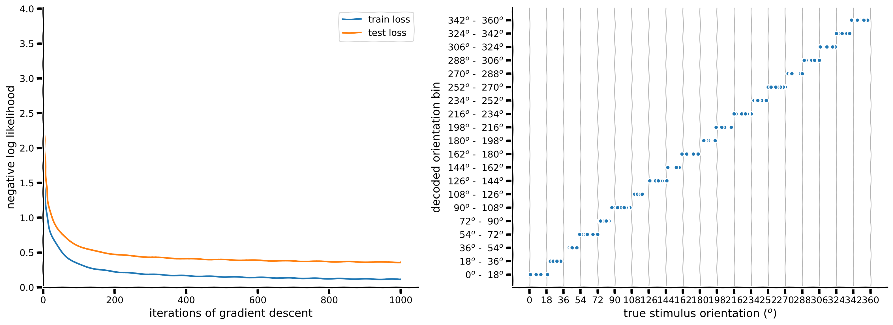
Submit your feedback#
Show code cell source
# @title Submit your feedback
content_review(f"{feedback_prefix}_Add_regularization_to_training_Exercise")
It seems we were overfitting a little because we increased the accuracy a small amount by adding an L1 and L2 regularization penalty. What errors are still being made by the model?
Let’s see how the weights look after adding L1_penalty > 0.
W_in = net.in_layer.weight.detach().cpu().numpy() # we can run detach, cpu and numpy to get a numpy array
print(f'shape of W_in: {W_in.shape}')
W_out = net.out_layer.weight.detach().cpu().numpy()
visualize_weights(W_in[:, isort], W_out)
shape of W_in: (20, 23589)
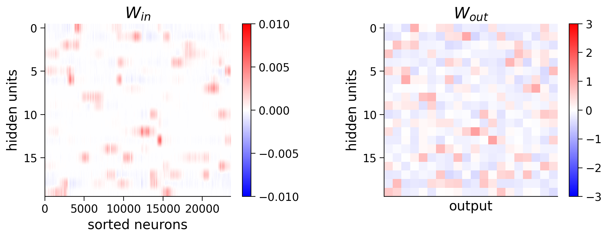
The weights appear to be sparser than before.
Section 3: Encoding - Convolutional Networks for Encoding#
Video 2: Convolutional Encoding Model#
Submit your feedback#
Show code cell source
# @title Submit your feedback
content_review(f"{feedback_prefix}_Convolutional_Encoding_Model_Video")
In neuroscience, we often want to understand how the brain represents external stimuli. One approach to discovering these representations is to build an encoding model that takes as input the external stimuli (in this case grating stimuli) and outputs the neural responses.
Because the visual cortex is often thought to be a convolutional network where the same filters are combined across the visual field, we will use a model with a convolutional layer. We learned how to build a convolutional layer in the previous section. We will add to this convolutional layer a fully connected layer from the output of the convolutions to the neurons. We will then visualize the weights of this fully connected layer.
Execute this cell to download the data
Show code cell source
# @markdown Execute this cell to download the data
import hashlib
import requests
fname = "W3D4_stringer_oribinned6_split.npz"
url = "https://osf.io/p3aeb/download"
expected_md5 = "b3f7245c6221234a676b71a1f43c3bb5"
if not os.path.isfile(fname):
try:
r = requests.get(url)
except requests.ConnectionError:
print("!!! Failed to download data !!!")
else:
if r.status_code != requests.codes.ok:
print("!!! Failed to download data !!!")
elif hashlib.md5(r.content).hexdigest() != expected_md5:
print("!!! Data download appears corrupted !!!")
else:
with open(fname, "wb") as fid:
fid.write(r.content)
Section 3.1: Neural tuning curves#
In the next cell, we plot the turning curves of a random subset of neurons. We have binned the stimuli orientations more than in Tutorial 1. We create the gratings images as above for the 60 orientations below, and save them to a variable grating_stimuli.
Rerun the cell to look at different example neurons and observe the diversity of tuning curves in the population. How can we fit these neural responses with an encoding model?
Execute this cell to load data, create stimuli, and plot neural tuning curves
Show code cell source
# @markdown Execute this cell to load data, create stimuli, and plot neural tuning curves
### Load data and bin at 8 degrees
# responses are split into test and train
resp_train, resp_test, stimuli = load_data_split(fname)
n_stimuli, n_neurons = resp_train.shape
print(f'resp_train contains averaged responses of {n_neurons} neurons'
f'to {n_stimuli} binned stimuli')
# also make stimuli into images
orientations = np.linspace(0, 360, 61)[:-1] - 180
grating_stimuli = np.zeros((60, 1, 12, 16), np.float32)
for i, ori in enumerate(orientations):
grating_stimuli[i,0] = grating(ori, res=0.025)#[18:30, 24:40]
grating_stimuli = torch.from_numpy(grating_stimuli)
print('grating_stimuli contains 60 stimuli of size 12 x 16')
# Visualize tuning curves
fig, axs = plt.subplots(3, 5, figsize=(15,7))
for k, ax in enumerate(axs.flatten()):
neuron_index = np.random.choice(n_neurons) # pick random neuron
plot_tuning(ax, stimuli, resp_train[:, neuron_index], resp_test[:, neuron_index], neuron_index, linewidth=2)
if k == 0:
ax.text(1.0, 0.9, 'train', color='y', transform=ax.transAxes)
ax.text(1.0, 0.65, 'test', color='m', transform=ax.transAxes)
fig.tight_layout()
plt.show()
resp_train contains averaged responses of 23589 neuronsto 60 binned stimuli
grating_stimuli contains 60 stimuli of size 12 x 16
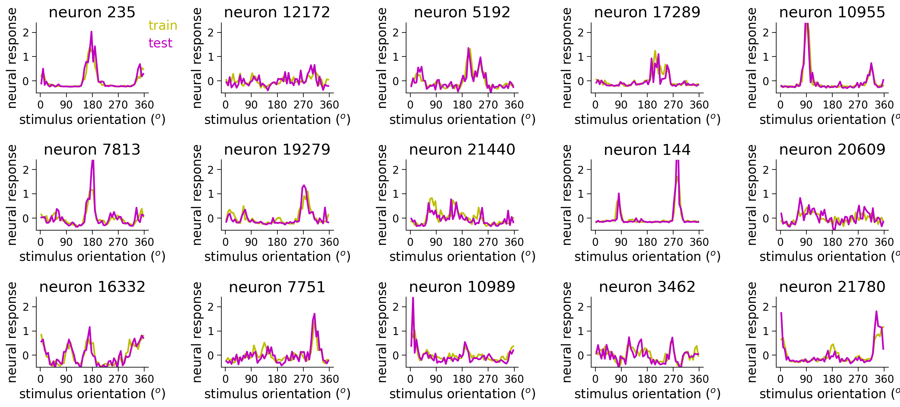
Section 3.2: Adding a fully-connected layer to create encoding model#
We will build a torch model like above with a convolutional layer. Additionally, we will add a fully connected linear layer from the convolutional units to the neurons. We will use 6 convolutional channels (\(C^{out}\)) and a kernel size (\(K\)) of 7 with a stride of 1 and padding of \(K/2\) (same as above). The stimulus is size (12, 16). Then the convolutional unit activations will go through a linear layer to be transformed into neural responses.
Think! 3.2: Number of units and weights#
How many units will the convolutional layer have?
How many weights will the fully connected linear layer from convolutional units to neurons have?
# to_remove explanation
"""
1. There are 6 convolutional channels and 12 x 16 positions because the stride
of the convolution is 1. Therefore, there are 6 * 12 * 16 = 1152 units in the
convolutional layer.
2. The fully connected linear layer will have 1152 * n_neurons weights. It will
also have n_neurons additive bias terms.
""";
Submit your feedback#
Show code cell source
# @title Submit your feedback
content_review(f"{feedback_prefix}_Number_of_units_and_weights_Discussion")
Coding Exercise 3.2: Add linear layer#
Remember in Tutorial 1 we used linear layers. Use your knowledge from Tutorial 1 to add a linear layer to the model we created above.
Execute to get train function for our neural encoding model
Show code cell source
# @markdown Execute to get `train` function for our neural encoding model
def train(net, custom_loss, train_data, train_labels,
test_data=None, test_labels=None,
learning_rate=10, n_iter=500, L2_penalty=0., L1_penalty=0.):
"""Run gradient descent for network without batches
Args:
net (nn.Module): deep network whose parameters to optimize with SGD
custom_loss: loss function for network
train_data: training data (n_train x input features)
train_labels: training labels (n_train x output features)
test_data: test data (n_train x input features)
test_labels: test labels (n_train x output features)
learning_rate (float): learning rate for gradient descent
n_epochs (int): number of epochs to run gradient descent
L2_penalty (float): magnitude of L2 penalty
L1_penalty (float): magnitude of L1 penalty
Returns:
train_loss: training loss across iterations
test_loss: testing loss across iterations
"""
optimizer = optim.SGD(net.parameters(), lr=learning_rate, momentum=0.9) # Initialize PyTorch SGD optimizer
train_loss = np.nan * np.zeros(n_iter) # Placeholder for train loss
test_loss = np.nan * np.zeros(n_iter) # Placeholder for test loss
# Loop over epochs
for i in range(n_iter):
if n_iter < 10:
for param_group in self.optimizer.param_groups:
param_group['lr'] = np.linspace(0, learning_rate, 10)[n_iter]
y_pred = net(train_data) # Forward pass: compute predicted y by passing train_data to the model.
if L2_penalty>0 or L1_penalty>0:
weights = net.out_layer.weight
loss = custom_loss(y_pred, train_labels, weights, L2_penalty, L1_penalty)
else:
loss = custom_loss(y_pred, train_labels)
### Update parameters
optimizer.zero_grad() # zero out gradients
loss.backward() # Backward pass: compute gradient of the loss with respect to model parameters
optimizer.step() # step parameters in gradient direction
train_loss[i] = loss.item() # .item() transforms the tensor to a scalar and does .detach() for us
# Track progress
if (i+1) % (n_iter // 10) == 0 or i==0:
if test_data is not None and test_labels is not None:
y_pred = net(test_data)
if L2_penalty>0 or L1_penalty>0:
loss = custom_loss(y_pred, test_labels, weights, L2_penalty, L1_penalty)
else:
loss = custom_loss(y_pred, test_labels)
test_loss[i] = loss.item()
print(f'iteration {i+1}/{n_iter} | train loss: {train_loss[i]:.4f} | test loss: {test_loss[i]:.4f}')
else:
print(f'iteration {i+1}/{n_iter} | train loss: {train_loss[i]:.4f}')
return train_loss, test_loss
class ConvFC(nn.Module):
"""Deep network with one convolutional layer + one fully connected layer
Attributes:
conv (nn.Conv1d): convolutional layer
dims (tuple): shape of convolutional layer output
out_layer (nn.Linear): linear layer
"""
def __init__(self, n_neurons, c_in=1, c_out=6, K=7, b=12*16,
filters=None):
""" initialize layer
Args:
c_in: number of input stimulus channels
c_out: number of convolutional channels
K: size of each convolutional filter
h: number of stimulus bins, n_bins
"""
super().__init__()
self.conv = nn.Conv2d(c_in, c_out, kernel_size=K, padding=K//2, stride=1)
self.dims = (c_out, b) # dimensions of conv layer output
M = np.prod(self.dims) # number of hidden units
################################################################################
## TO DO for students: add fully connected layer to network (self.out_layer)
# Fill out function and remove
raise NotImplementedError("Student exercise: add fully connected layer to initialize network")
################################################################################
self.out_layer = nn.Linear(M, ...)
# initialize weights
if filters is not None:
self.conv.weight = nn.Parameter(filters)
self.conv.bias = nn.Parameter(torch.zeros((c_out,), dtype=torch.float32))
nn.init.normal_(self.out_layer.weight, std=0.01) # initialize weights to be small
def forward(self, s):
""" Predict neural responses to stimuli s
Args:
s (torch.Tensor): n_stimuli x c_in x h x w tensor with stimuli
Returns:
y (torch.Tensor): n_stimuli x n_neurons tensor with predicted neural responses
"""
a = self.conv(s) # output of convolutional layer
a = a.view(-1, np.prod(self.dims)) # flatten each convolutional layer output into a vector
################################################################################
## TO DO for students: add fully connected layer to forward pass of network (self.out_layer)
# Fill out function and remove
raise NotImplementedError("Student exercise: add fully connected layer to network")
################################################################################
y = ...
return y
# Initialize network
n_neurons = resp_train.shape[1]
## Initialize with filters from Tutorial 2
example_filters = filters(out_channels=6, K=7)
net = ConvFC(n_neurons, filters = example_filters).to(device)
# Run GD on training set data
# ** this time we are also providing the test data to estimate the test loss
train_loss, test_loss = train(net, regularized_MSE_loss,
train_data=grating_stimuli.to(device), train_labels=resp_train.to(device),
test_data=grating_stimuli.to(device), test_labels=resp_test.to(device),
n_iter=200, learning_rate=2,
L2_penalty=5e-4, L1_penalty=1e-6)
# Visualize
plot_training_curves(train_loss, test_loss)
# to_remove solution
class ConvFC(nn.Module):
"""Deep network with one convolutional layer + one fully connected layer
Attributes:
conv (nn.Conv1d): convolutional layer
dims (tuple): shape of convolutional layer output
out_layer (nn.Linear): linear layer
"""
def __init__(self, n_neurons, c_in=1, c_out=6, K=7, b=12*16,
filters=None):
""" initialize layer
Args:
c_in: number of input stimulus channels
c_out: number of convolutional channels
K: size of each convolutional filter
h: number of stimulus bins, n_bins
"""
super().__init__()
self.conv = nn.Conv2d(c_in, c_out, kernel_size=K, padding=K//2, stride=1)
self.dims = (c_out, b) # dimensions of conv layer output
M = np.prod(self.dims) # number of hidden units
self.out_layer = nn.Linear(M, n_neurons)
# initialize weights
if filters is not None:
self.conv.weight = nn.Parameter(filters)
self.conv.bias = nn.Parameter(torch.zeros((c_out,), dtype=torch.float32))
nn.init.normal_(self.out_layer.weight, std=0.01) # initialize weights to be small
def forward(self, s):
""" Predict neural responses to stimuli s
Args:
s (torch.Tensor): n_stimuli x c_in x h x w tensor with stimuli
Returns:
y (torch.Tensor): n_stimuli x n_neurons tensor with predicted neural responses
"""
a = self.conv(s) # output of convolutional layer
a = a.view(-1, np.prod(self.dims)) # flatten each convolutional layer output into a vector
y = self.out_layer(a)
return y
# Initialize network
n_neurons = resp_train.shape[1]
## Initialize with filters from Tutorial 2
example_filters = filters(out_channels=6, K=7)
net = ConvFC(n_neurons, filters = example_filters).to(device)
# Run GD on training set data
# ** this time we are also providing the test data to estimate the test loss
train_loss, test_loss = train(net, regularized_MSE_loss,
train_data=grating_stimuli.to(device), train_labels=resp_train.to(device),
test_data=grating_stimuli.to(device), test_labels=resp_test.to(device),
n_iter=200, learning_rate=2,
L2_penalty=5e-4, L1_penalty=1e-6)
# Visualize
with plt.xkcd():
plot_training_curves(train_loss, test_loss)
iteration 1/200 | train loss: 1.8895 | test loss: 1.8836
iteration 20/200 | train loss: 1.0868 | test loss: 1.0772
iteration 40/200 | train loss: 0.4668 | test loss: 0.4840
iteration 60/200 | train loss: 0.2013 | test loss: 0.2341
iteration 80/200 | train loss: 0.1072 | test loss: 0.1456
iteration 100/200 | train loss: 0.0767 | test loss: 0.1167
iteration 120/200 | train loss: 0.0685 | test loss: 0.1089
iteration 140/200 | train loss: 0.0661 | test loss: 0.1068
iteration 160/200 | train loss: 0.0650 | test loss: 0.1059
iteration 180/200 | train loss: 0.0644 | test loss: 0.1054
iteration 200/200 | train loss: 0.0639 | test loss: 0.1050
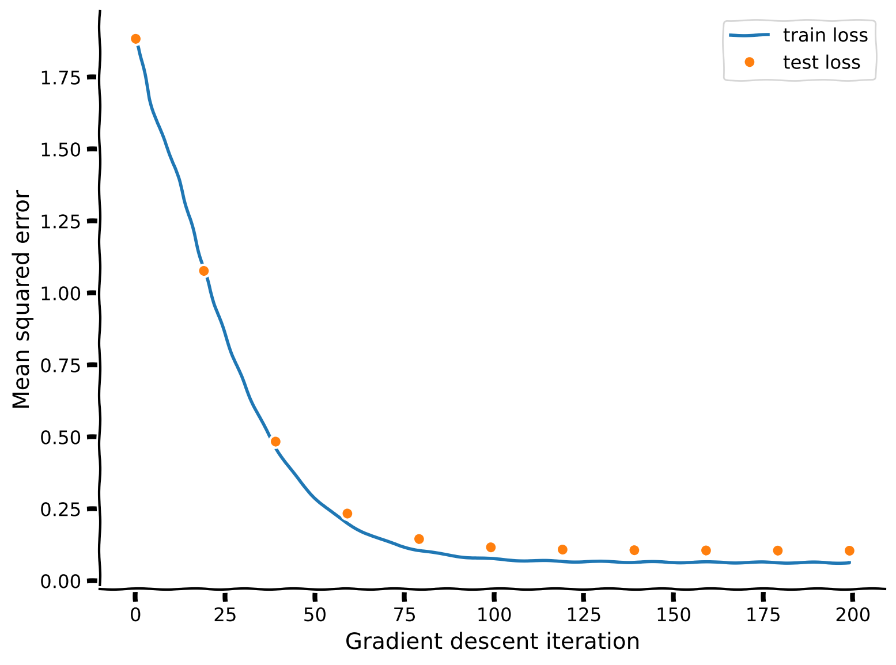
Submit your feedback#
Show code cell source
# @title Submit your feedback
content_review(f"{feedback_prefix}_Add_linear_layer_Exercise")
How well can we fit single neuron tuning curves with this model? What aspects of the tuning curves are we capturing?
Execute this cell to examine predictions for random subsets of neurons
Show code cell source
# @markdown Execute this cell to examine predictions for random subsets of neurons
y_pred = net(grating_stimuli.to(device))
# Visualize tuning curves & plot neural predictions
fig, axs = plt.subplots(2, 5, figsize=(15,6))
for k, ax in enumerate(axs.flatten()):
ineur = np.random.choice(n_neurons)
plot_prediction(ax, y_pred[:, ineur].detach().cpu(),
resp_train[:, ineur],
resp_test[:, ineur])
if k==0:
ax.text(.1, 1., 'train', color='y', transform=ax.transAxes)
ax.text(.1, 0.9, 'test', color='m', transform=ax.transAxes)
ax.text(.1, 0.8, 'prediction', color='g', transform=ax.transAxes)
fig.tight_layout()
plt.show()
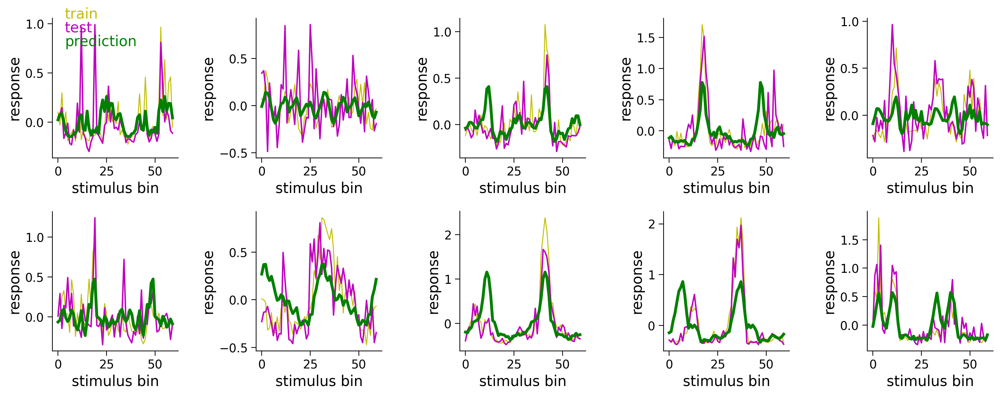
We can see if the convolutional channels changed at all from their initialization as center-surround and Gabor filters. If they don’t then it means that they were a sufficient basis set to explain the responses of the neurons to orientations to the accuracy seen above.
# get weights of conv layer in convLayer
out_channels = 6 # how many convolutional channels to have in our layer
weights = net.conv.weight.detach().cpu()
print(weights.shape) # Can you identify what each of the dimensions are?
plot_weights(weights, channels=np.arange(0, out_channels))
torch.Size([6, 1, 7, 7])
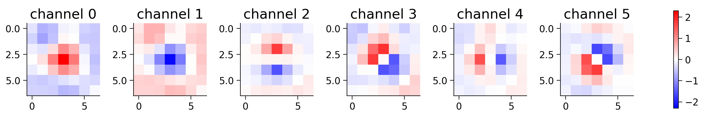